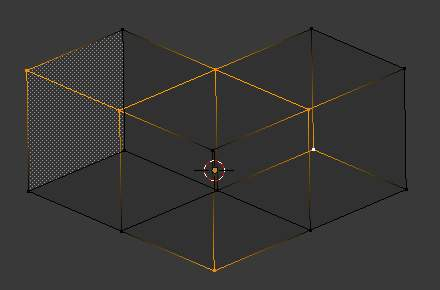
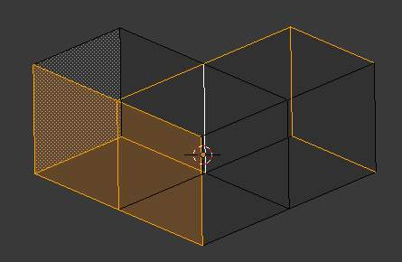
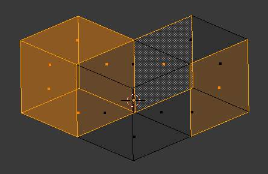
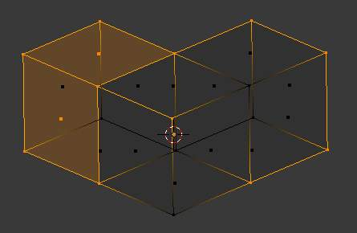

简介¶
There are many ways to select elements, and it depends on what Mesh Select Mode you are in as to what selection tools are available. First we will go through these modes and after that a look is taken at basic selection tools.
Selection Mode¶
Select Mode Header Widgets¶
参考
Ctrl-Tab{kind=link}
编辑模式 selection buttons.
In 编辑模式 there are three different selection modes. You can enter the different modes by selecting one of the three buttons in the header.
- Vertices
In this mode vertices are drawn as points.
Selected vertices are drawn in orange, unselected vertices in black, and the active or last selected vertex in white.
- Edges
In this mode the vertices are not drawn.
Instead the selected edges are drawn in orange, unselected edges black, and the active or last selected edge in white.
- Faces
In this mode the faces are drawn with a selection point in the middle which is used for selecting a face.
Selected faces and their selection point are drawn in orange, unselected faces are drawn in black, and the active or last selected face is highlighted in white.
When using these button, you can make use of modifier keys, see: Switching Select Mode.
Almost all tools are available in all three mesh selection modes. So you can Rotate, Scale, Extrude, etc. in all modes. Of course rotating and scaling a single vertex will not do anything useful (without setting the 轴心点 to another location), so some tools are more or less applicable in some modes.
Switching Select Mode¶
When switching modes in an “ascendant” way (i.e. from simpler to more complex), from Vertices to Edges and from Edges to Faces, the selected parts will still be selected if they form a complete element in the new mode.
For example, if all four edges in a face are selected, switching from Edges mode to Faces mode will keep the face selected. All selected parts that do not form a complete set in the new mode will be unselected.
Hence, switching in a “descendant” way (i.e. from more complex to simpler), all elements defining the “high-level” element (like a face) will be selected (the four vertices or edges of a quadrangle, for example).
Multiple Selection Modes¶
By holding Shift-LMB when selecting a selection mode,
you can enable multiple Selection Modes at once.
This allows you to quickly select Vertices/Edges/Faces, without first having to switch modes.
Expanding Selection Modes¶
By holding Ctrl when selecting a higher selection mode,
all elements touching the current selection will be added,
even if the selection does not form a complete higher element.
See Fig. Selection Modes. for examples of the different modes.

Vertices mode example. |

Edges mode example. |

Faces mode example. |

Mixed mode example. |
{kind=link}
{kind=link}
{kind=link}
{kind=link}
Selection Tools¶
The select menu in edit mode contains tools for selecting components. These are described in more detail in the following pages.
- Border Select
B - Enables a rectangular region for selection
- Circle Select
C - Enables a circular shaped region for selection
- (De)select All
A - Select all or none of the mesh components.
- Invert Selection
Ctrl-I - Selects all geometry that are not selected, and deselect currently selected components.
- Select Random
- Selects a random group of vertices, edges, or faces, based on a percentage value.
- 间隔式弃选
- Deselect alternating faces, to create a checker like pattern.
- Select Sharp Edges
- This option will select all edges that are between two faces forming an angle less than a given value, which is asked you via a small pop-up menu. The lower is this angle limit, the sharper will be the selected edges. At 180, all manifold edges will be selected.
- Linked Flat Faces
Ctrl-Shift-Alt-F - Select connected faces based on a threshold of the angle between them. This is useful for selecting faces that are planar.
- Interior Faces
- Select faces where all edges have more than two faces.
- Side of Active
- Selects all data on the mesh in a single axis
- Select Faces by Sides
- Selects all faces that have a specified number of edges.
- Non Manifold
Ctrl-Shift-Alt-M - Selects non-manifold geometry. See Mesh 高级应用 Selection.
- Loose
- Select all vertices or edges that do not form part of a face.
- Similar
Shift-G Select geometry based on how similar certain properties are to it.
Note
The items shown in the menu depend on the Selection Mode.
- More
Ctrl-NumpadPlus - Propagates selection by adding geometry that are adjacent to selected elements.
- Less
Ctrl-NumpadMinus - Deselects geometry that form the bounds of the current selection
- Mirror
- Select mesh items at the mirrored location.
- Pick Linked
L - Selects all geometry connected to the geometry under the cursor.
- Linked
Ctrl-L - Selects all geometry that are connected to the current selection.
- Vertex Path
- Selects a vertex path between two selected vertices
- Edge Loop
- Selects a loop of edges from a selected edge
- Edge Ring
- Selects edges parallel to a selected edge in the same ring of faces
- Loop Inner-Region
- Converts a closed selection of edges to the region of faces it encloses
- Boundary Loop
- Converts a selection of faces to the ring of edges enclosing it